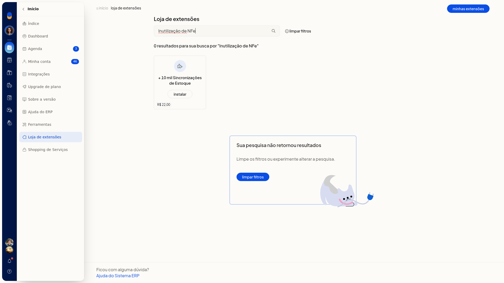
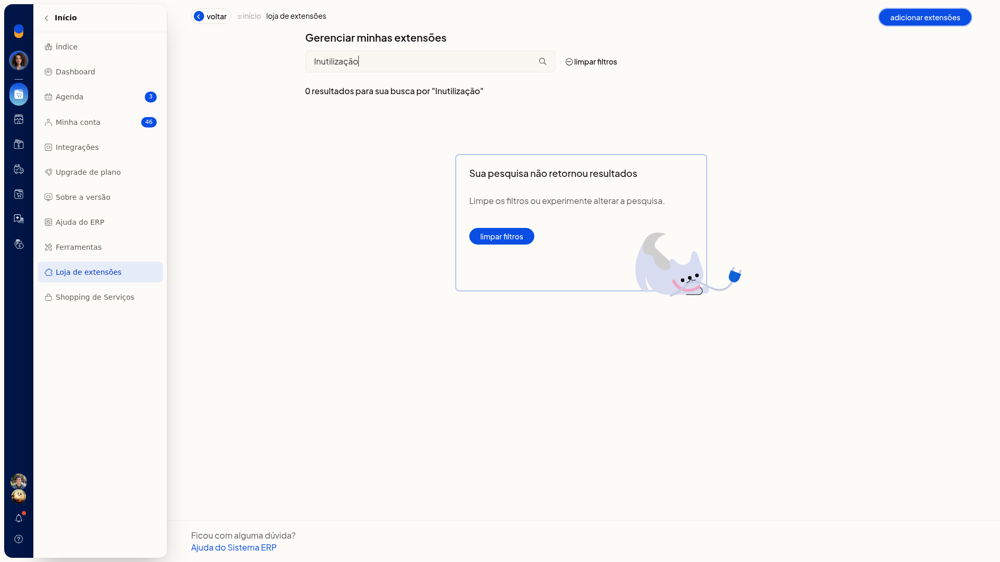
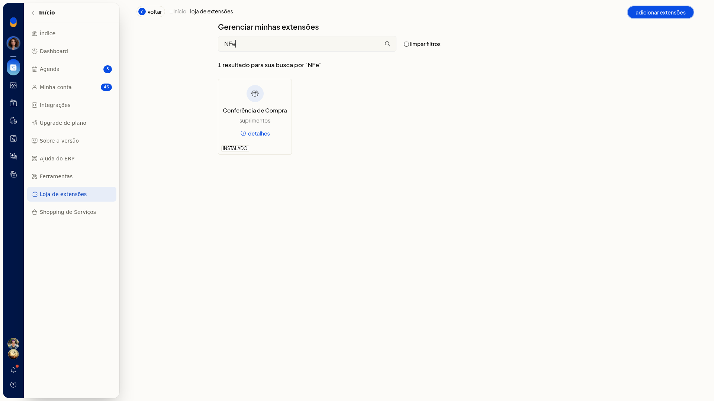

Inutilizar numeração
Importante
- Se a tela informar que o Tiny NFe não está em execução, não há formulário para preencher. Use o link de download indicado na tela e deixe o serviço em execução antes de inutilizar.
- Um aviso lateral da tela trata da SEFAZ.
Instruções
-
Acesse Vendas > Notas Fiscais.
-
Abra Mais ações e selecione Inutilizar numeração. Você também pode abrir o menu da linha da nota pendente ou emitida e escolher Inutilizar numeração.

-
Consulte a lista de números inutilizados. Ela pode abrir com a mensagem Nenhum registro encontrado. Na mesma tela estão os botões Relatório de numeração, inutilizar numeração e Mais ações.

-
Use os filtros de protocolo/série, período, modelo e data e hora para localizar os registros. Com o Tiny NFe em execução, o formulário de inutilização fica disponível nessa tela.
Resultado
Você permanece na consulta de numerações inutilizadas, com o botão inutilizar numeração. Enquanto o Tiny NFe não estiver em execução, a inutilização não é enviada.
Informações adicionais
A inutilização não é instalada pela loja
A busca por Inutilização de NFe ou por inutilizar em Início > Loja de extensões não retorna resultado. Em Minhas extensões, a busca por Inutilização também não retorna item. O caminho é a própria tela de notas fiscais.




Excluir nota pendente pode quebrar a numeração
No diálogo de exclusão de nota pendente, a tela informa que só notas pendentes podem ser excluídas e que excluir nota pendente ou rejeitada quebra a numeração. O mesmo diálogo traz link para inutilizar numeração.